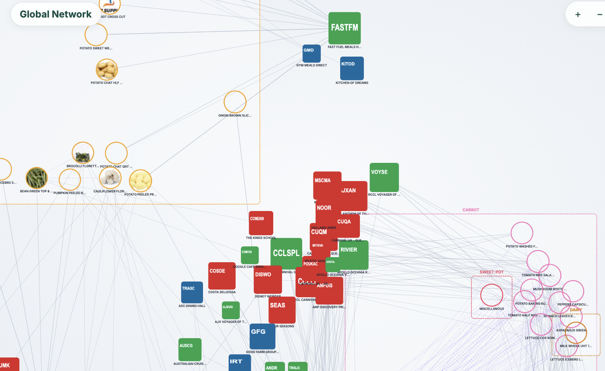
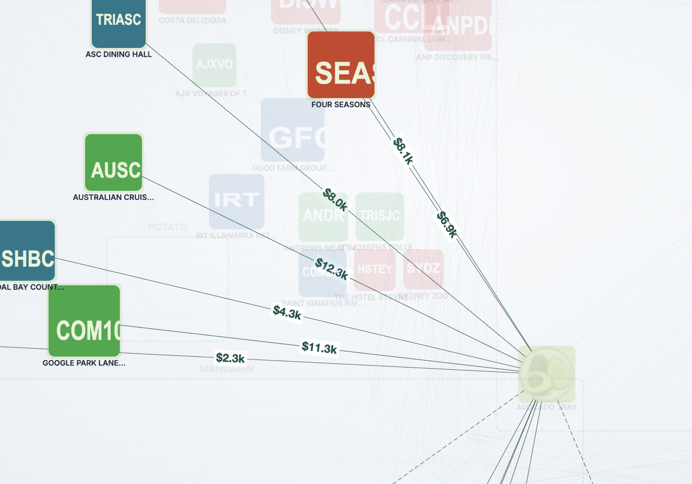

"The acquisition gave us scale. Data will give us control."
We're not asking for a pivot. We're asking to continue what's already working and finish the next stage.
Fresh legacy system
Slow queries, rigid reports
4-hour wait for a sales comparison
Local slave DB → Google Cloud
→ BigQuery warehouse
→ Nightly jobs → KPI dashboards
This is Stage 1. It's done.
| Page | What It Answers |
|---|---|
| KPI Collection | "What's the business health this week?" |
| Labour Hour | "Are we over-staffing any shift?" |
| Waste Product | "Where is $ literally rotting?" |
| Sales Weekly | "WoW momentum—who/what is slipping?" |
| Growth Tracker | "Is each rep hitting their quota?" |
| Custom Report | "I need this ad-hoc slice NOW" |
| Data Insight (SOM) | "Which customers are secretly similar?" |
| Relation Atlas | "Hidden basket structure of each rep's book" |


Real production data. No mockups. These tools are used daily by sales leadership and analysts.
Good plays aren't captured. Bad habits aren't corrected. Growth is a random walk.
Pure tabular data. Nobody answers "so what?" or "what next?" — no actionable insight.
Budget goes to narrow roles. Peers cut headcount and invest in AI. We pay yesterday's rates for yesterday's output.
Senior managers manually reconcile data instead of managing — work that belongs two levels below.
Near capacity. Manual picking doesn't scale. Post-merger SKUs = rising labour cost per shipment.
Every department runs its own tools and spreadsheets. Manual cross-dept handoffs. Zero AI anywhere.
All six share one root cause — no unified data + AI platform.
One integrated investment — not six separate tools. The platform is the answer.
Powered by the SFP Ontology Platform — the same spine behind every solution in this deck.
Playbook suggestions tailored to each customer
See which strategies work on which customer archetypes
Dimensional visibility into segments, rep performance, category health
Independent, data-driven view of company operations
Stage 1 is live but still maturing. Without continued investment, what we've built goes un-maintained and decays — we'd end up rebuilding from scratch, paying twice for the same foundation.
Peers are investing in AI while cutting headcount. In 12 months the gap becomes "they scaled 3× without hiring, we hired 3× to scale 1×."
The team who built this stack is rare. Without Stage 2 runway, they leave. Rebuilding = 18–24 months and 3× the cost.
Every month we delay AI OCR, AI dispatch, AI coaching — the manual labour bill compounds. A deferred saving is a real cost.
Integration is exactly when objective data matters most. Without a unified layer, synergies stay hidden and fire drills emerge months later.
Four assets that money alone can't buy.
Team members who grew with SFP for years. Institutional memory of workflows, customers, routes, and every legacy quirk. They know why exceptions exist.
Data pipelines, LLM integration, mobile apps, warehouse automation. 20+ AI patents. Every layer of the current production stack was designed and shipped by this team.
Built and operated similar data + AI stacks across multiple players in the wholesale industry. Applying patterns we already know work—not learning on SFP's dime.
Stage 1+ is live: BigQuery warehouse, nightly pipelines, 8 production dashboards, iOS rep app. The runway for Stage 2 (AI co-pilot) is already poured.
Replacing this externally = 18–24 months of ramp-up + consulting bills many multiples of the current ask.
A modest continued investment in the data + AI team for the next 12 months.
$ savings: manual hours replaced
$ impact: productivity + cross-sell revenue
Infrastructure for 3× scale without 3× headcount
Schedule a 30-minute deep dive with a live demo of
Relation Atlas + SFP Drive iOS